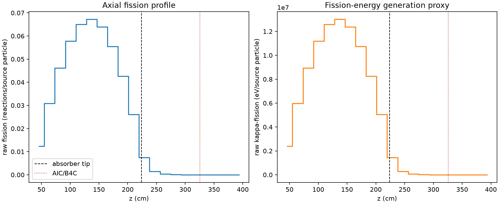
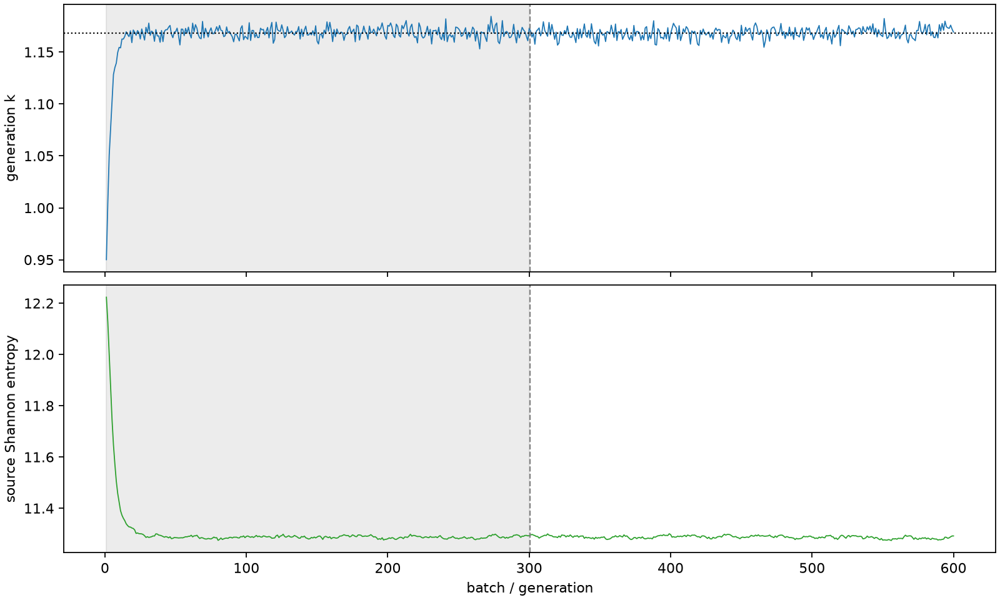

| field | value |
|---|---|
| experiment | V2-ADAPTIVE_01-0027 |
| k | 1.168450721734791 |
| MC standard error | 0.0001837354536132259 |
| seconds | 1248.1519818590023 |
| acceptance | not_assessed |
| convergence | review_required |
Completed is output integrity only; physical and statistical review required. Zero tallies do not prove zero production or zero uncertainty.
| diagnostic | value |
|---|---|
| geometric fuel voxels | 5280 |
| zero fission tally voxels | 693 |
| low signal fuel voxels | 1607 |
| low signal fission share | 6.219321736899404e-05 |
| low signal kappa share | 6.222060000411171e-05 |
| important fission share | 0.9500220474894457 |
| previous filter included | 3673 |
| duration estimate s | 1562.5173488400023 |
| actual minus estimate s | -314.3653669810001 |
| fission relative MC error | statistics |
|---|---|
| all_geometric_fuel | {"voxels": 5280, "positive_mean_voxels": 4587, "zero_mean_voxels": 693, "undefined_relative_error_voxels": 693, "median": 0.010297053861538088, "p95": 0.8560542425461241, "maximum": 1.0000000000000002} |
| low_signal | {"voxels": 1607, "positive_mean_voxels": 914, "zero_mean_voxels": 693, "undefined_relative_error_voxels": 693, "median": 0.5950700547239711, "p95": 1.0, "maximum": 1.0000000000000002} |
| important_95pct | {"voxels": 2354, "positive_mean_voxels": 2354, "zero_mean_voxels": 0, "undefined_relative_error_voxels": 0, "median": 0.006977413713084662, "p95": 0.00998214991854748, "maximum": 0.01323191245598727} |
| outside_previous_filter | {"voxels": 1607, "positive_mean_voxels": 914, "zero_mean_voxels": 693, "undefined_relative_error_voxels": 693, "median": 0.5950700547239711, "p95": 1.0, "maximum": 1.0000000000000002} |
| kappa_fission relative MC error | statistics |
|---|---|
| all_geometric_fuel | {"voxels": 5280, "positive_mean_voxels": 4587, "zero_mean_voxels": 693, "undefined_relative_error_voxels": 693, "median": 0.01028517048867131, "p95": 0.8575507401898926, "maximum": 1.0000000000000002} |
| low_signal | {"voxels": 1607, "positive_mean_voxels": 914, "zero_mean_voxels": 693, "undefined_relative_error_voxels": 693, "median": 0.5946513386804562, "p95": 1.0, "maximum": 1.0000000000000002} |
| important_95pct | {"voxels": 2354, "positive_mean_voxels": 2354, "zero_mean_voxels": 0, "undefined_relative_error_voxels": 0, "median": 0.0069692277278868234, "p95": 0.009971192098409002, "maximum": 0.013216510715538875} |
| outside_previous_filter | {"voxels": 1607, "positive_mean_voxels": 914, "zero_mean_voxels": 693, "undefined_relative_error_voxels": 693, "median": 0.5946513386804562, "p95": 1.0, "maximum": 1.0000000000000002} |
| axial bin | fission share | kappa-fission share |
|---|---|---|
| 1 | 0.02592895280577503 | 0.025930065427107078 |
| 2 | 0.0645780495058343 | 0.0645776588935603 |
| 3 | 0.09689424567536742 | 0.09689371486809024 |
| 4 | 0.12131601523617859 | 0.121315197374223 |
| 5 | 0.136287750618882 | 0.13628706905025853 |
| 6 | 0.1408624897429736 | 0.14086148435181156 |
| 7 | 0.13406334520652388 | 0.13406223724544206 |
| 8 | 0.11643171074068573 | 0.11643119686209692 |
| 9 | 0.0892894699428032 | 0.08928887190767464 |
| 10 | 0.05460168075160764 | 0.05460142590467167 |
| 11 | 0.015748919243139627 | 0.015752120323275543 |
| 12 | 0.0030931241257650477 | 0.0030942972442413504 |
| 13 | 0.000690417308515508 | 0.000690740416457979 |
| 14 | 0.00016506228767735655 | 0.00016513223127793782 |
| 15 | 3.8435630890276775e-05 | 3.845336474620973e-05 |
| 16 | 8.303465666901285e-06 | 8.305850249793593e-06 |
| 17 | 1.6806451330065204e-06 | 1.681719748986996e-06 |
| 18 | 3.085890772582371e-07 | 3.085335124956961e-07 |
| 19 | 1.963905565557926e-08 | 1.961624470936031e-08 |
| 20 | 1.883844803601037e-08 | 1.8815309256052434e-08 |
Histories include the inactive-to-active transition at batch 300. kappa-fission approximates fission energy production, not total heat deposition.

